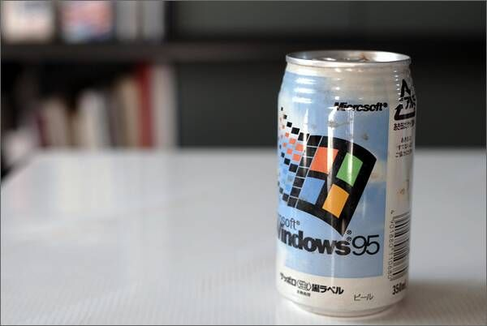
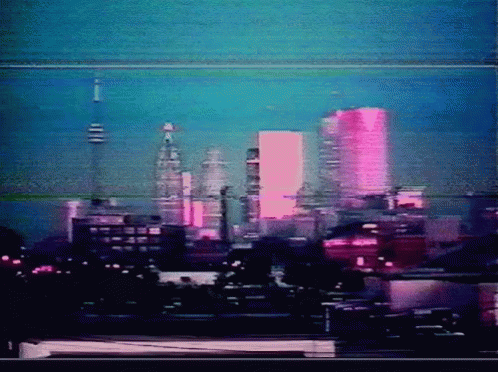
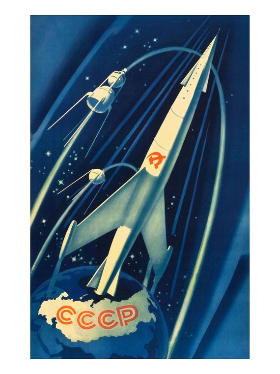

4 Unusual Music Genres Made Popular with the Internet
Vapourwave
Vapourwave (also vaporwave for U.S. spelling) is an interesting genre focusing on sampling music from the 1980's and 1990's and remixing them. It most often refers to aesthetics and consumerism; it also can be somewhat nostalgic. A watered down version of vapourwave is to simply slow down music with minor audio effects.

Synthwave
Synthwave, also known as outrun, just like vapourwave has a sense of nostalgia to the listener. However, instead of being based on samples, it is usually an original creation. It is inspired by 1980's movies and video games, and it is darker than vapourwave.
Chillwave
Chillwave is a genre of music that uses a lot of computer generated effects to make it sound like 1980's music, but more electronic and sometimes distorted and low quality, just like the media used at the time can be when overused (cassette tape, VHS tapes).

Sovietwave
Sovietwave is a very interesting genre. It is based on nostalgia of the Soviet Union. It is usually electronic, sometimes with samples of old Soviet media.

Go to top